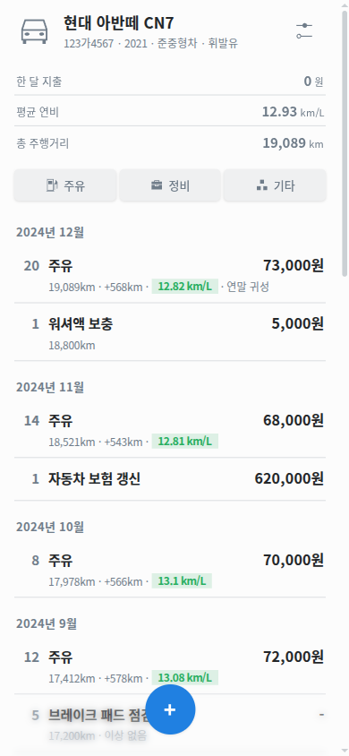
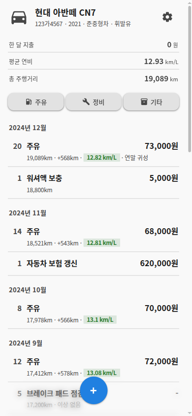
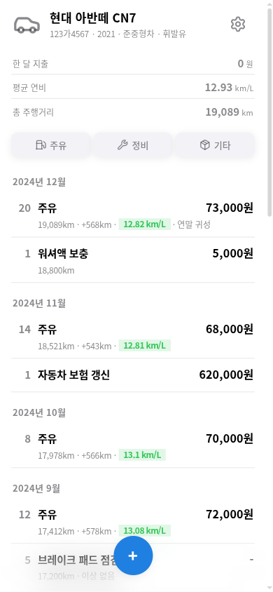
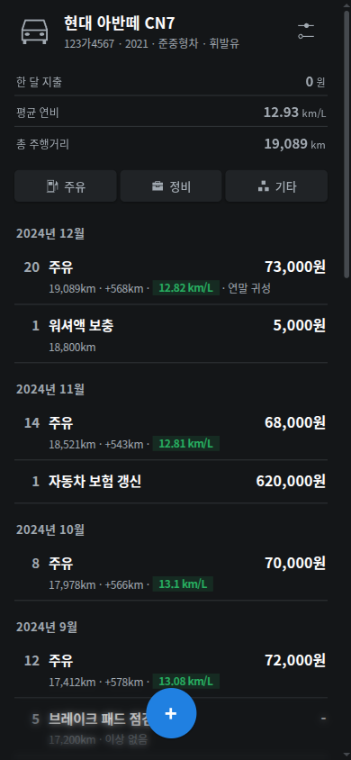
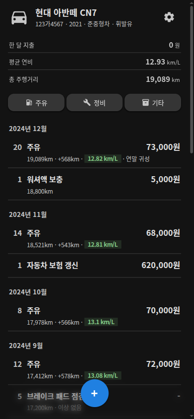
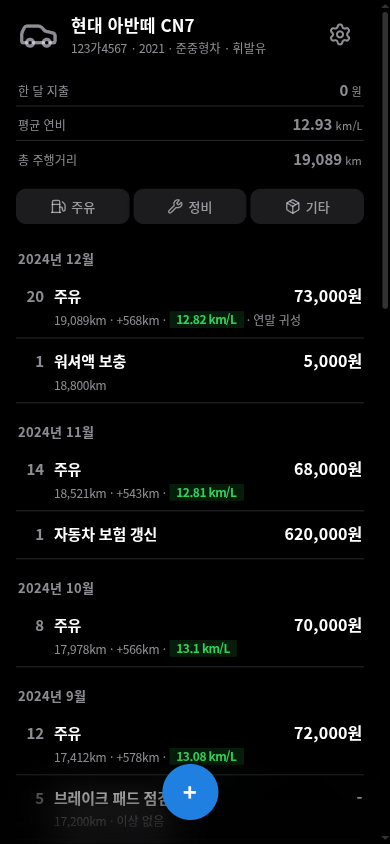
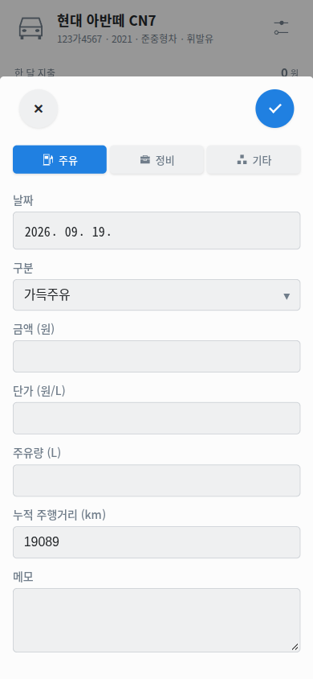
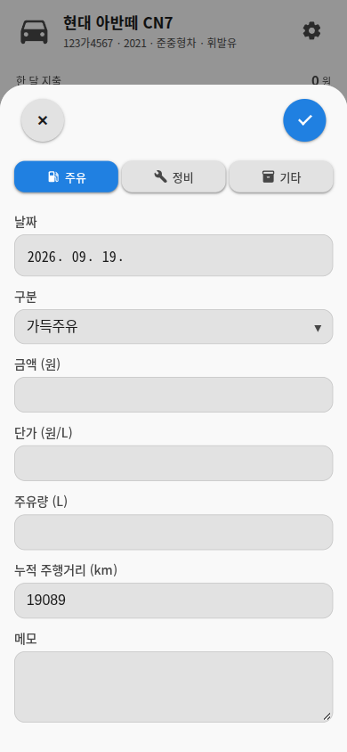

390×844. 실측일 2026-09-20. 브라우저에서 ?theme=breeze|material|apple로 지정,
?theme=auto로 해제(localStorage에 남는다).
| 테마 | --surface (light / dark) | --radius-lg | --blur |
|---|---|---|---|
| breeze | #fcfcfc / #141618 | 5px | blur(4px) |
| material | #f9f9f9 / #131313 | 28px | blur(6px) |
| apple | #ffffff / #000000 | 26px | blur(20px) saturate(180%) |
테마마다 출처가 다르다 — material은 material-design-icons(Apache-2.0, 면), breeze는 KDE Breeze(LGPL-3.0+, 면), apple은 Lucide(ISC, 선). SF Symbols는 애플 라이선스상 웹 번들에 넣을 수 없다(자세한 건 NOTICE.md). breeze에는 자동차 도메인 아이콘이 없어 주유·충전은 직접 그렸다. → 아이콘 27장 대조표








라이트에서 apple과 breeze는 모서리 반경 말고는 거의 같아 보인다.
apple을 구분짓는 건 Liquid Glass인데, 유리가 닿는 자리가 .topbg(홈에서는
렌더되지 않고 시트 안에서는 display:none)와 .bottom-bg(그라데이션 마스크)뿐이라
화면에서 거의 안 보인다. 그래서 아이콘을 OS별로 갈아끼웠다 — 지금은 면/면/선으로
칠 방식부터 갈려서 라이트에서도 셋이 확실히 구분된다.